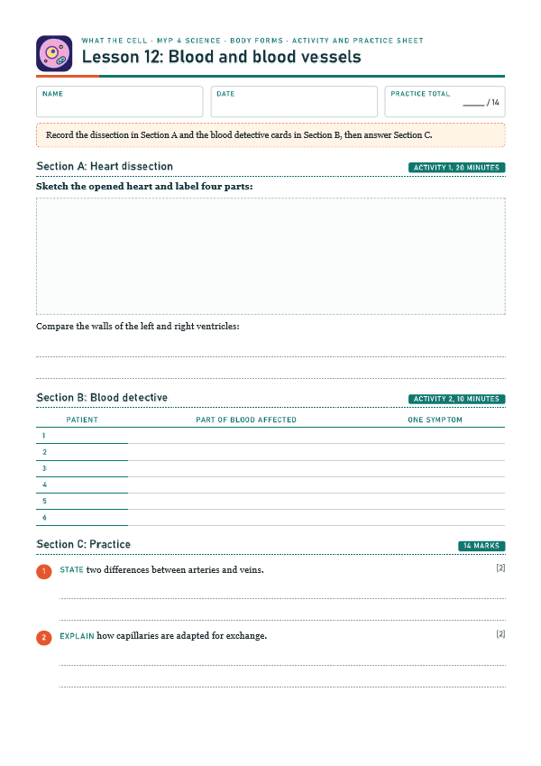

By the end of the lesson you can
- Compare arteries, veins and capillaries
- Name the four parts of blood and their jobs
- Explain how red blood cells are adapted
- Identify parts of a real heart
Keys: arrows or a presentation clicker move the slides, F for full screen. Slides with a red dot have a video or simulation.
Videos (all 5 minutes or less)
- 4:02
Blood vessels
Cognito. While you watch: Why do arteries have thick, elastic walls? Slide 11.
Simulations
- Lab
Print and practise

Activity and practice sheet
Used in the lesson’s activities, with practice questions. Your teacher has the answers.
Download (PDF)Lesson 12 slides
All 18 slides in one file, to read again or print. The video buttons on the slides open YouTube.
Download the slides (PDF)Revising? The Revision tab on the unit page has the unit notes and review.
Class activity pack
Everything to print for the lesson’s activities: picture cards, sorting mats, station cards with their kit lists, and the teacher’s set-up notes. Print it before class.
Download the activity pack (PDF)Notes: Blood and blood vessels
artery
Carries blood away from the heart under high pressure. For example: the aorta.
vein
Carries blood back to the heart; has valves. For example: the vena cava.
capillary
Tiny vessel with a wall one cell thick; exchange happens here. For example: in every tissue.
plasma
The yellow liquid part of blood. For example: carries dissolved food and CO2.
red blood cell
Carries oxygen using haemoglobin. For example: no nucleus.
white blood cell
Defends the body against germs. For example: engulfs bacteria.
Key words
| artery | carries blood away from the heart |
|---|---|
| vein | carries blood to the heart; has valves |
| capillary | one-cell-thick vessel for exchange |
| plasma | liquid part of blood |
| haemoglobin | red protein that carries oxygen |
| white blood cell | fights germs |
| platelet | helps blood clot |